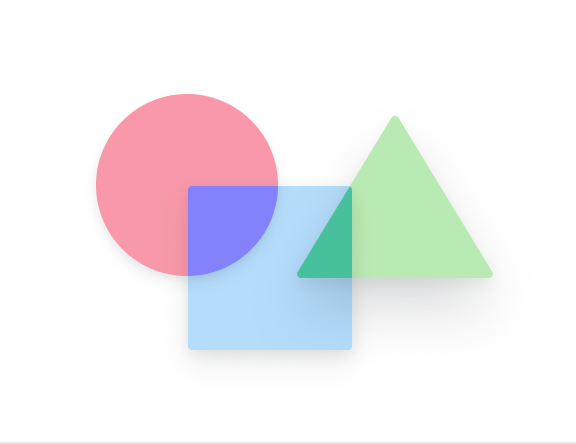

Ionic Framework

Components
A comprehensive look at Ionic Framework's beautifully designed UI component library.
Introduction
Learn the fundamentals you need to know to start building amazing apps with Ionic Framework.
Installation
A step-by-step guide to installing and setting up your system to build Ionic Framework apps.
CLI
The Ionic command-line interface is your go-to tool for for developing Ionic apps.
Native APIs
Integrate and leverage device plugins like Bluetooth, Maps, HealthKit, and more.
Theming
A comprehensive look at Ionic Framework's beautifully designed UI component library.
Resources
Learn Ionic with official guides, videos, books, courses, and more.
FAQ
Get answers to some of the most commonly asked questions about the framework.
Ionic CLI